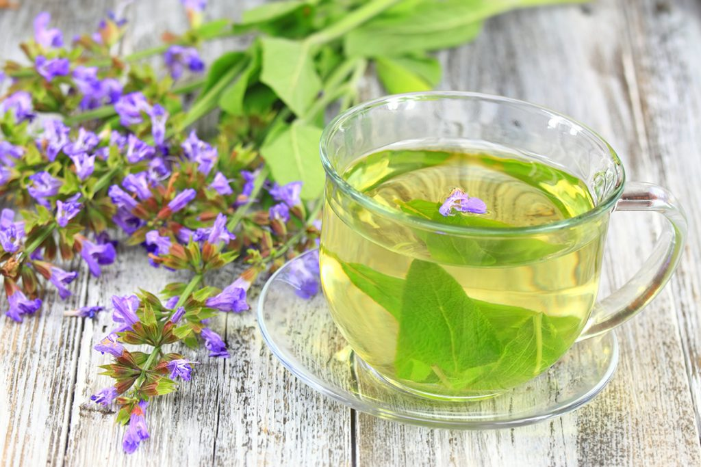

Infusión de Manzanilla
3.50 € (antes 3,90 €)
Una clásica infusión para relajación y apoyo digestivo. Preparación: 1 cucharada por taza, infusionar 5-7 minutos.
Ingredientes
- Manzanilla (Matricaria chamomilla) 100%.
Ficha técnica
- Formato: Bolsa 50 g
- Origen: Agricultura controlada
- Conservación: Lugar seco y fresco
Productos relacionados
¿Es apta durante el embarazo?
Consulta siempre con tu matrona o médico; la manzanilla suele ser segura en cantidades moderadas.